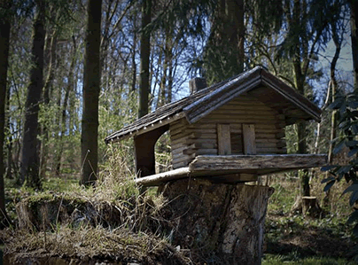

Who We Are
About us
Grooming can be stressful for some dogs, and even more so for older dogs, creating anxiety, pain, and potentially unsafe processes. Grooming requires dogs to stand up for long periods of time, endure baths, high powered air dryers, and being put into uncomfortable positions to trim certain areas of the body. Salons are typically loud, fast-paced, high volume situations. By providing in-home grooming services, much of that stress can be reduced or eliminated completely and increased care and patience can be provided to pets with mobility or pain issues.
Our grooming approach ALWAYS puts the pet’s comfort and safety first, taking more time wherever needed, giving breaks, and providing a haircut that fits the dog’s current lifestyle and challenges.
Additional In Home Grooming Benefits Include:
- No car ride necessary
- Reduced fatigue/pain/anxiety levels compared to after a salon visit
- Vital signs can be monitored during the groom
- Dogs can sit or lie down for the process, no grooming noose is used
- Clients have full transparency to see every step of the process
- Presence of owner can calm the dog
- Home is quiet and familiar compared to a salon

DRIVING DUCK
While 12,000 years ago might seem a bold estimate—nearly 3,000 before the date of the Cyprus tomb's cat—it actually is a perfectly logical one, since that is precisely when the first agricultural societies began to flourish in the Middle East's Fertile Crescent.
Our Social Media Links


Copyright 2022 by MAC DOLL WIDE-LIFE LIMITED